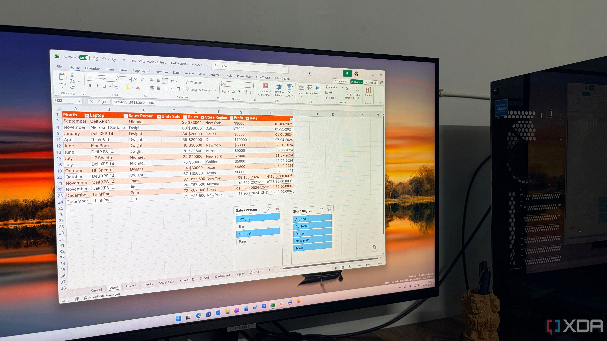

微軟宣佈將於 2026 年 9 月 14 日移除 =COPILOT() 函數，這個僅推出約一年的預覽功能在從未正式公開發布的情況下即將走入歷史

微軟宣佈將於 2026 年 9 月 14 日移除 Excel 中的 =COPILOT() 函數，這個僅推出約一年的預覽功能，在從未正式公開發布的情況下即將走入歷史。
2025 年 8 月：微軟首次宣佈為 Excel 加入 =COPILOT() 函數，用戶可用自然語言描述需求，Copilot 即會生成相應結果
原定計劃：2027 年 1 月正式向所有用戶開放
實際情況：僅透過 Insider 和 Frontier 計劃提供預覽測試，未曾大規模發布
2026 年 9 月 14 日：函數將正式停用，所有 =COPILOT() 呼叫將無法運作
微軟在 Message Center 通知中表示，現有的 Copilot 側邊欄已提供相同功能，包括：文字摘要、數據分類、內容生成、從網絡檢索資訊。微軟認為統一的 Copilot 入口更利於用戶體驗，無需透過函數呼叫這條替代路徑。
無法創建新公式：9 月 14 日後，用戶將無法使用 =COPILOT() 創建新公式
替代方案：可繼續使用 Copilot 側邊欄和浮動動態操作按鈕（DAB）取得相同 AI 功能
Google 的對比：Google 目前仍透過 Workspace Experiments 測試其等效的 AI() 函數，最終命運尚未可知
這次變動是微軟更廣泛 AI 策略調整的一部分。據 The Information 報導，微軟 Copilot 負責人 EVP Jacob Andreou 在內部備忘錄中表示，Copilot 需要「贏得在用戶生活中存在的權利」，意味著要放棄未能提供價值的功能。
=COPILOT() 函數將於 2026 年 9 月 14 日正式停用。在此日期前，用戶仍可使用該函數，但之後將完全無法運作。建議用戶及早熟悉 Copilot 側邊欄的操作方式。
「Beginning September 14, 2026, the =COPILOT function in Microsoft Excel will no longer be available.」
— Microsoft Message Center 通知=COPILOT() 函數的移除標誌著微軟 AI 功能的整合趨勢。雖然直接輸入函數看似直觀，但微軟選擇將所有 AI 能力集中在統一的側邊欄介面，反映出其對用戶體驗一致性的重視。對於企業用戶而言，這意味著需要重新培訓員工熟悉新的 Copilot 操作方式，而非過往的函數呼叫模式。
| 項目 | =COPILOT() 函數 | Copilot 側邊欄 |
|---|---|---|
| 使用方式 | 在儲存格輸入函數 | 點擊側邊欄圖標 |
| 可用時間 | 至 2026 年 9 月 14 日 | 持續供應 |
| 功能範圍 | 文字摘要、數據分類、內容生成 | 文字摘要、數據分類、內容生成、網絡檢索 |
| 發布狀態 | 僅預覽，從未正式發布 | 已正式發布 |